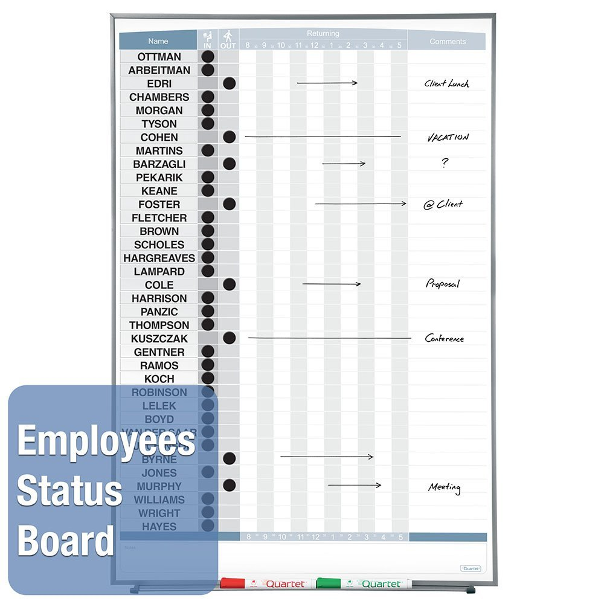

List of suggested features
- Integration with phone system to check for answer and on_phone events.
If phone is answered, change status to 'In'. (Adhearsion -> Asterisk)
- Create a geofence for each office location. Use geofence to help web app
prompt to update when moving in or out of the office.
- seed status_selects table with standard statuses
